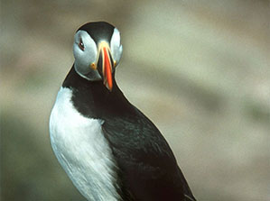

10.10.17г.
Заголовок новости
Контейнерные перевозки - наиболее востребованный и удобный способ транспортировки грузов.
Подробнее
Линейный реверсивный сервис в порты Европы и Балтики
Доставка лесопромышленной продукции в порты Европы
Подробнее
10.10.17г.
Заголовок новости
Контейнерные перевозки - наиболее востребованный и удобный способ транспортировки грузов.
Подробнее
Линейный сервис в летне-осеннюю навигацию
В качестве линейных перевозок, в период летней и осенней навигации, мы предоставляем услуги
доставки грузов
Подробнее
Линейный круглогодичный сервис в порт Сабетта
Круглогодичная доставка грузов в порт Сабетта
Подробнее
10.10.17г.
Заголовок новости
Контейнерные перевозки - наиболее востребованный и удобный способ транспортировки грузов.
Подробнее
Услуги порта
Терминал круглогодичной навигации расположен в Соломбальском округе г. Архангельска.
Подробнее
Швартовые операции
Под термином «швартовные операции» следует понимать все действия членов экипажа при швартовке и
отшвартовке судна. Швартовные операции - один из самых ответственных и сложных элементов рейса
судна.
Подробнее
Упаковка
Предохраняет грузы от опасностей транспортировки, а также устраняет или ослабляет действие
разрушительной силы, являющейся исходной причиной большинства потерь и повреждений груза и тары.
Подробнее
Погрузочно-разгрузочные работы
Комплекс мер, направленных на поднятие разнообразных грузов с целью их погрузки или выгрузки
Подробнее
Ответственное хранение грузов
Временное размещения груза на складе без необходимости аренды клиентом целого складского
помещения.
Подробнее
Распаузка
Выгрузка на необорудованный берег с помощью собственных средств
Подробнее
Перевозка опасных грузов
любые объекты, характеристики и свойства могут: угрожать жизни и здоровью человека; нанести
непоправимый вред для окружающей среды; привести к порче материальных объектов.
Подробнее
Морская перевозка
Перевозки всех типов грузов: сборных, негабаритных, тяжеловесных, навалочных, горюче-смазочных и
генеральных грузов. В практике есть перевозки техники весом 90 тонн.
Подробнее